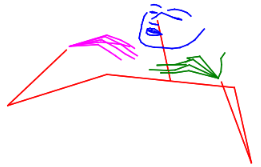
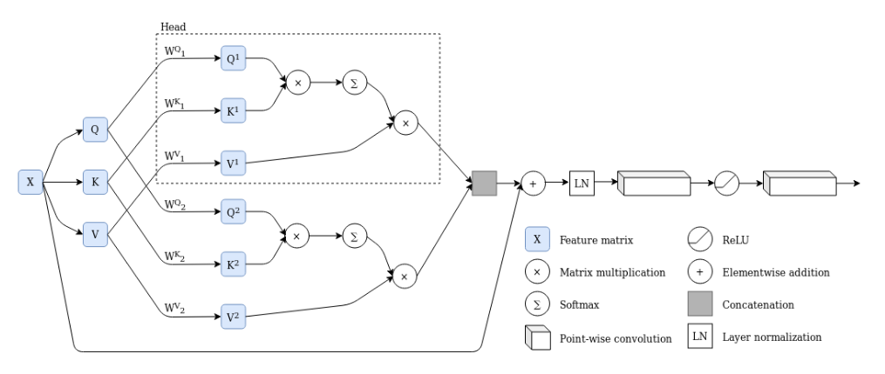
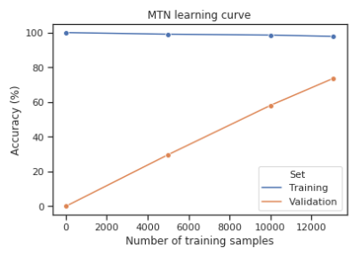

14 November 2020
The 12th edition of the Language Resources and Evaluation Conference (LREC) was supposed to be held in Marseille in May 2020. Due to the ongoing pandemic, the conference was cancelled, but the organizers worked hard to publish the proceedings. Now, the committee has decided to disseminate the conference proceedings over the course of ten weeks. In this post, I present a high-level overview of my submission to LREC 2020, Sign Language Recognition with Transformer Networks.
There is an undeniable communication barrier between deaf people communicating through sign language and hearing people communicating through speech. Within the domain of artificial intelligence lies a possible solution to bringing down this barrier: automatic sign language interpreters. These interpreters could for example run on mobile devices, and translate between sign language and speech or text. They would be powered by machine learning algorithms, in particular deep learning algorithms. These deep learning algorithms require a large amount of data to work properly, and unfortunately these data are not as readily available as they are for verbal languages. Sign language recognition systems are therefore less powerful than speech recognition systems and natural language processing systems operating on written text.
One of the aims of my research project is to support the annotation process of sign language corpora. These are large collections of video data of conversations between native signers. This annotation process involves aligning labels to video. These labels range from textual translations to mouth shapes and glosses. This is a time consuming process that requires expertise. At IDLab-AIRO, we wish to speed up the annotation process by automating certain actions. Not only would this aid linguistics researchers, but it would also lead to the availability of larger datasets for the purpose of sign language recognition and translation.
This paper presents a solution for the "isolated sign recognition" problem. Specifically, this means that the proposed system is able to recognize individual signs in small video fragments: one video contains one sign. Many isolated sign recognition systems are trained on datasets that contain repetitions of signs (which we will call "machine learning datasets" as they are often created for the purpose of training a sign language recognition system). In our case, we train it on isolated signs that are cut from a conversation. This introduces additional complexity through sign transitions: the starting hand shapes and positions differ between different productions of the same sign based on context. It also introduces machine learning challenges as our datasets suffer from heavy class imbalance and different vocabularies per person. An isolated sign recognition system can be used to provide annotation suggestions: when an annotator selects a video, a list of suggestions is shown. With sufficient accuracy, annotating as the correct sign is one click away.
We recognize signs by using what we call "transformer networks". Specifically, the neural network consists of three parts: a feature extractor that processes individual frames of the video, a sequential processing module, and a classifier. We present 4 model variants and compare them:
OpenPose1 is a system that is able to extract human pose from input images. This is a powerful feature extraction approach for problems such as action, gesture, and sign language recognition. By extracting human pose, background noise can easily be removed. By normalizing poses, the distance of the subject to the camera and other factors can also be accounted for.
 OpenPose outputs coordinates and confidence values of keypoints of the human body.2
LSTMs, or Long Short-Term Memory networks, are a form of recurrent neural networks that are able to process sequences. I won't go into detail here because there are plenty of informative resources on LSTMs. The main thing to remember is that these networks are very good at processing sequential data as they keep a hidden state that functions as a memory cell.
Transformers are a more recent sequence processing architecture, introduced in 2017 by Vaswani et al.3 The transformer architecture uses multi-head attention, which means that multiple attention calculations are performed in parallel. Attention itself is based on three input tensors: the query, key, and value. The query and key are used to create a mask, to which the softmax operation is applied. This mask is used to attend to certain regions of the value. In this way, the neural network can learn to pay attention to certain input regions based on its inputs. Attention is applied in parallel in a single layer (in multiple heads), and there are many such layers. In the traditional transformer, there is both an encoder and a decoder, and the way they compute their query, key and value tensors is different. However, in this work, query, key and value are all computed from the input features; the encoder-decoder architecture is not needed for this problem. For an in-depth explanation of the transformer architecture I heartily recommend reading through this explanatory notebook.
 A 2-head attention layer applies attention twice, in parallel, and processes the outputs of both heads after concatenation.2
Introduced in 2019 by Kozlov et al.4, Video Transformer Networks (VTNs) use a 2D Convolutional Neural Network (CNN) as a feature extractor for individual frames, followed by several multi-head attention layers for sequence processing. While the resulting accuracy on benchmark datasets is lower than that of competing 3D CNN architectures, the VTN uses fewer parameters. This is especially useful for a problem like sign language recognition, where overfitting lurks around every corner because of the small dataset sizes. The promising results of Kozlov et al. using this network architecture on action recognition tasks, and the lower number of parameters, lead to our decision to apply VTNs to sign language recognition.
As mentioned before, we compared several architectures on the same isolated sign recognition problem. For details on architectures and hyperparameters, you can refer to the paper itself.
We noticed in our experiments that OpenPose yielded good results, but due to noise on the poses (especially of the hands), ResNets were able to extract better features. As a final experiment, we combined both pose features and ResNet features into a single model with spatial attention to combine both features. This resulted in slightly better results still. In the future, more robust hand pose estimation techniques or robust pre-processing may be used to improve performance of networks using OpenPose as a feature extractor.
In the end, the best result was achieved with both feature types: for 100 signs, we achieved a top-1 accuracy of 74.4% on 100 classes. For a suggestion system, the top-5 accuracy is also interesting (this is the percentage of times the correct value was in the top-5 of predictions of the neural network); this was 89.81%. In other words, in almost 90% of the cases, the correct gloss is in the network's first five guesses. Important note: that is, if the given sign is part of the vocabulary, of course.
 Having access to more labeled data would allow the MTN to achieve even higher accuracy.2
As part of the evaluation of our model, we visualized a learning curve. This figure clearly indicates that having access to more labeled data would lead to better performance, and, extrapolating, the model would reach very high accuracy with twice the data. Our conclusion is therefore that current deep learning algorithms are clearly powerful enough for isolated sign recognition with lexical vocabularies, and the performance bottleneck lies in the available labeled data. This reinforces our research project: gathering more data is important, therefore supporting annotators of sign language corpora is an important research goal.
This work focused on isolated sign recognition with a limited dataset originating from sign language corpora: signs were cut from a conversation. The main remaining challenge in the domain of isolated sign recognition according to us is the recognition of non-lexical signs and scaling up to larger vocabularies.
Cao, Z., Hidalgo, G., Simon, T., Wei, S. E., & Sheikh, Y. (2018). OpenPose: realtime multi-person 2D pose estimation using Part Affinity Fields. arXiv preprint arXiv:1812.08008.
De Coster, M., Van Herreweghe, M., & Dambre, J. (2020). Sign language recognition with transformer networks. In 12th International Conference on Language Resources and Evaluation.
Vaswani, A., Shazeer, N., Parmar, N., Uszkoreit, J., Jones, L., Gomez, A. N., ... & Polosukhin, I. (2017). Attention is all you need. In Advances in neural information processing systems (pp. 5998-6008).
Kozlov, A., Andronov, V., & Gritsenko, Y. (2020, March). Lightweight network architecture for real-time action recognition. In Proceedings of the 35th Annual ACM Symposium on Applied Computing (pp. 2074-2080).